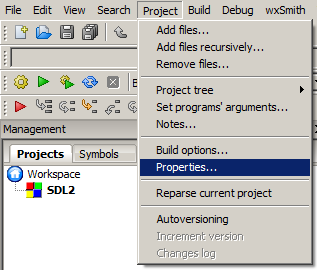
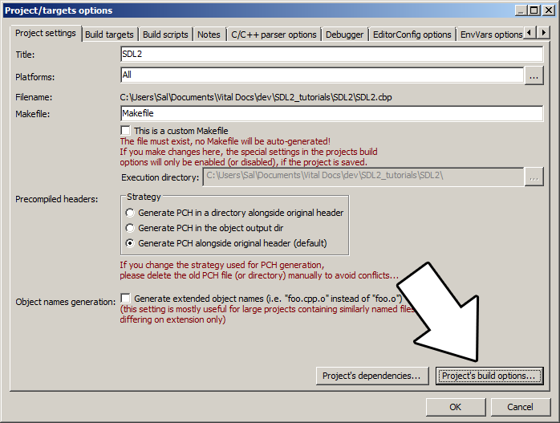
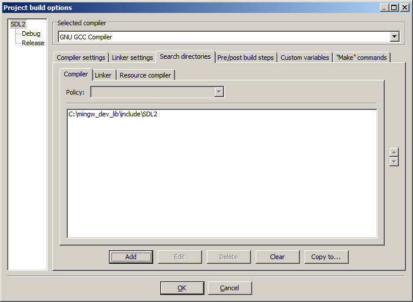
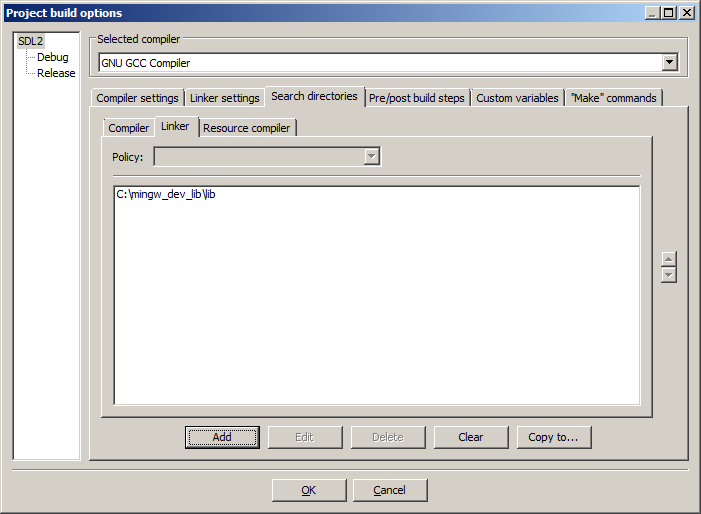
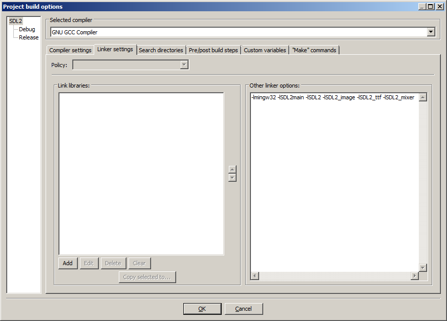
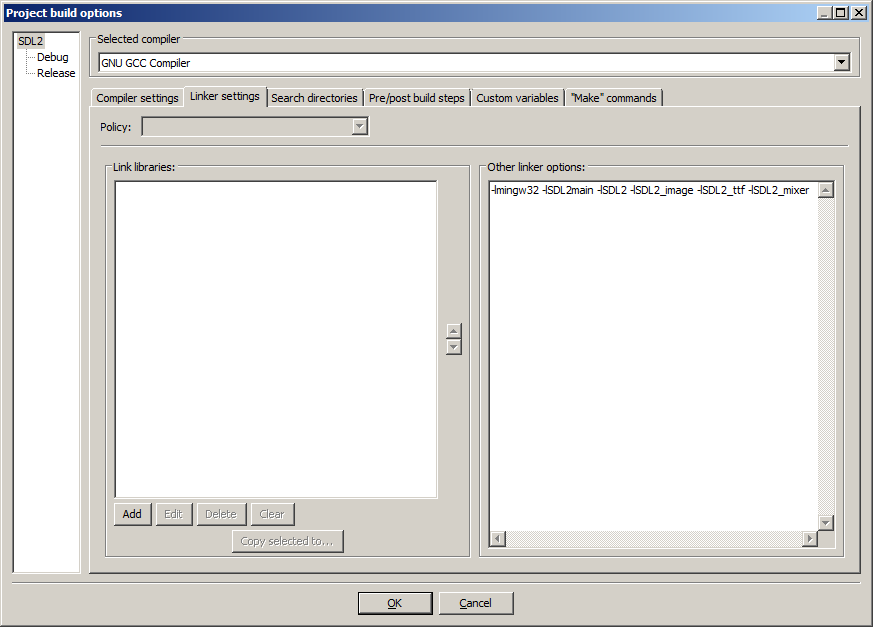

Setting up SDL Extension Libraries on Code::Blocks 12.11
Last Updated 11/18/13
1)First thing you need to do is download SDL_image headers and binaries. You will find them on the SDL_image website, specifically
on this page.
Since Code::Blocks comes with the MinGW compiler by default, odds are you'll want to download the MinGW development libraries.

Open the gzip archive and there should be a tar archive. Open up the tar archive and the should be a folder called SDL2_image-2.something.something. In side of that folder there should be a bunch of folders and files, most importantly i686-w64-mingw32 which contains the 32bit library and x86_64-w64-mingw32 which contains the 64bit library.
2)This is important: most compilers still compile 32bit binaries by default to maximize compatibility. We will be using the 32bit binaries for this tutorial set. It doesn't matter if you have a 64bit operating system, since we are compiling 32bit binaries we will be using the 32bit library.
Inside of i686-w64-mingw32 are the include, lib, and bin folders which contain everything we need compile and run SDL applications. Copy the contents of i686-w64-mingw32 to any directory you want. I recommend putting it in a folder that you dedicate to holding all your development libraries for MinGW. For these tutorials I'm putting it in a directory I created C:\mingw_dev_lib
3)Open up your SDL 2 project and go to project properties.
4)Now we have to tell Code::Blocks to search for header files in the library folder we just extracted. Go to build options.
In the Search Directories, we need to add a new compiler directory. Click add, Select the SDL_image folder inside of the include directory from the folder we extracted. Say no when it asks you whether you want it to be a relative path. Now Code::Blocks knows where to find the SDL_image header files.
You may have noticed that the folder added here is the same as the one for the SDL 2 main set up. Personally, I like keeping the SDL_image, SDL_ttf, and SDL_mixer headers and libraries in the same directories. Other people like to keep them separate. If you put the extension libary headers in the same directories as SDL 2, you can skip this step since you already told the compiler to look in that directory. If you put them somewhere else, you have to do this step so your compiler will look for the extension library headers in the right directory.
5)Next we are going to tell Code::Blocks to search for library files in the SDL folder we just extracted. All you have to is go to the linker tab and add the lib directory from the folder we extacted to the linker search directories.
As with before, if you put the library files for the extension library in the same directory as SDL 2, you can skip this step since the compiler is already looking in that directory.
6)In order to compile SDL 2 code, we have to tell the compiler to link against the libraries. Go under Linker Settings and paste
7)Like with plain SDL, the operating system needs to be able to find the dll files for the extension library while running.
Go find the SDL 2 folder you extracted and from the bin folder inside copy the dll files (all of them if there's more than one) and put it either where your executable will run, or inside of the system directory. C:\WINDOWS\SYSTEM32 is the 32bit windows system directory and C:\Windows\SysWOW64 is the 64bit system directory of 32bit applications. For these tutorials, I'm assuming we're making 32bit applications. If you get an error when you run the program where it complains that it can't find dll files, it means you messed up this step.
8)>Now go download the source for lesson 06. Add the source file inside to your project.
Now build. If there are any errors, make sure you didn't skip a step.
Now that you have the extension library compiling, it's time to go onto part 2 of the tutorial.
Since Code::Blocks comes with the MinGW compiler by default, odds are you'll want to download the MinGW development libraries.
Open the gzip archive and there should be a tar archive. Open up the tar archive and the should be a folder called SDL2_image-2.something.something. In side of that folder there should be a bunch of folders and files, most importantly i686-w64-mingw32 which contains the 32bit library and x86_64-w64-mingw32 which contains the 64bit library.
2)This is important: most compilers still compile 32bit binaries by default to maximize compatibility. We will be using the 32bit binaries for this tutorial set. It doesn't matter if you have a 64bit operating system, since we are compiling 32bit binaries we will be using the 32bit library.
Inside of i686-w64-mingw32 are the include, lib, and bin folders which contain everything we need compile and run SDL applications. Copy the contents of i686-w64-mingw32 to any directory you want. I recommend putting it in a folder that you dedicate to holding all your development libraries for MinGW. For these tutorials I'm putting it in a directory I created C:\mingw_dev_lib
3)Open up your SDL 2 project and go to project properties.

4)Now we have to tell Code::Blocks to search for header files in the library folder we just extracted. Go to build options.

In the Search Directories, we need to add a new compiler directory. Click add, Select the SDL_image folder inside of the include directory from the folder we extracted. Say no when it asks you whether you want it to be a relative path. Now Code::Blocks knows where to find the SDL_image header files.

If you get an error where the compiler says it can't find SDL.h, it means you messed up this step.You may have noticed that the folder added here is the same as the one for the SDL 2 main set up. Personally, I like keeping the SDL_image, SDL_ttf, and SDL_mixer headers and libraries in the same directories. Other people like to keep them separate. If you put the extension libary headers in the same directories as SDL 2, you can skip this step since you already told the compiler to look in that directory. If you put them somewhere else, you have to do this step so your compiler will look for the extension library headers in the right directory.
5)Next we are going to tell Code::Blocks to search for library files in the SDL folder we just extracted. All you have to is go to the linker tab and add the lib directory from the folder we extacted to the linker search directories.

If you get an error where the linker complains it can't find -lSDL2_image (or -lSDL2_ttf/-lSDL2_mixer), it means you messed up this step.As with before, if you put the library files for the extension library in the same directory as SDL 2, you can skip this step since the compiler is already looking in that directory.
6)In order to compile SDL 2 code, we have to tell the compiler to link against the libraries. Go under Linker Settings and paste
-lSDL2_image
into the other linker options field after -lmingw32 -lSDL2main -lSDL2 and click OK. If you were setting up SDL_ttf, you'd put -lSDL2_ttf and you'd put -lSDL2_mixer
for SDL_mixer.

If you get an error where the linker complains about a bunch of undefined references, it means you messed up this step.
7)Like with plain SDL, the operating system needs to be able to find the dll files for the extension library while running.
Go find the SDL 2 folder you extracted and from the bin folder inside copy the dll files (all of them if there's more than one) and put it either where your executable will run, or inside of the system directory. C:\WINDOWS\SYSTEM32 is the 32bit windows system directory and C:\Windows\SysWOW64 is the 64bit system directory of 32bit applications. For these tutorials, I'm assuming we're making 32bit applications. If you get an error when you run the program where it complains that it can't find dll files, it means you messed up this step.
8)>Now go download the source for lesson 06. Add the source file inside to your project.
Now build. If there are any errors, make sure you didn't skip a step.
Now that you have the extension library compiling, it's time to go onto part 2 of the tutorial.